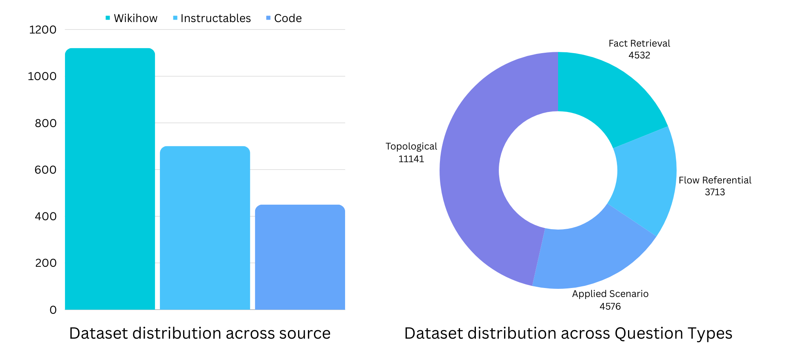
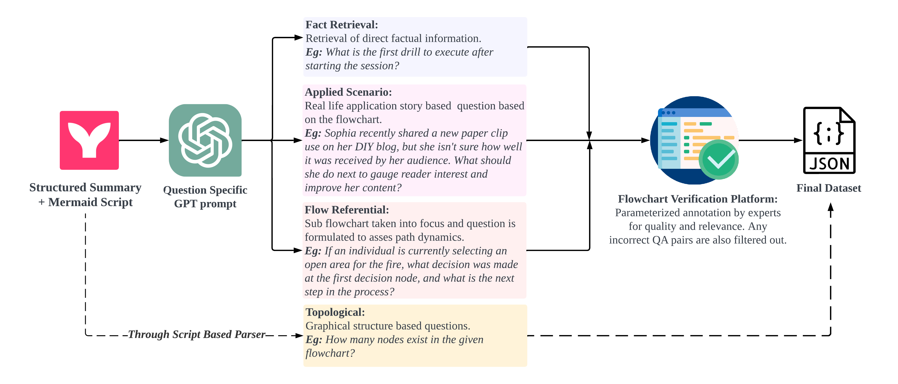
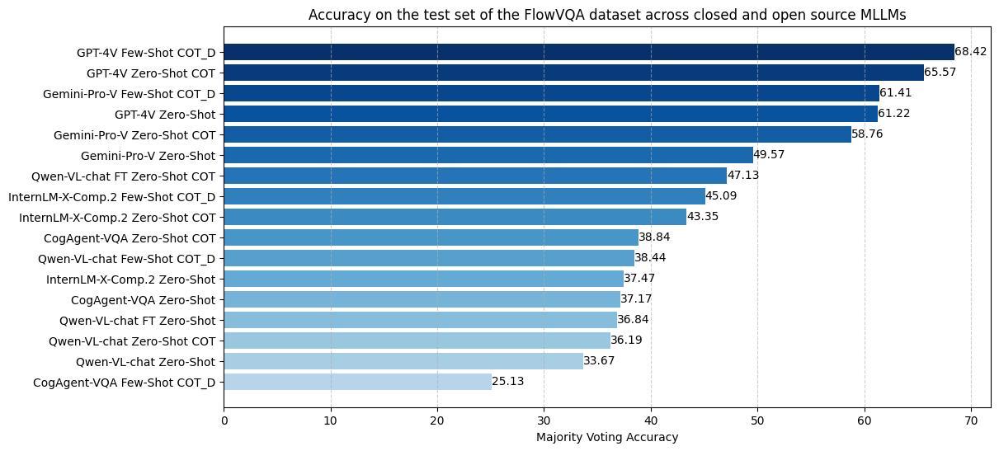

FlowVQA: Mapping Multimodal Logic in Visual Question Answering with Flowcharts
About
Current benchmarks for visual question answering fall short in evaluating crucial aspects like visual grounding and spatial reasoning skills. We introduce FlowVQA, a novel benchmark aimed at assessing the capabilities of visual question-answering MLLMs with flowcharts as visual contexts. This innovative benchmark brings together 2,272 carefully generated flowchart images and 22,413 question-answer pairs, challenging multimodal language models with tasks like information localization, decision-making, and logical progression. Our findings underscore the limitations of State-of-the-Art models across different categories in our dataset, highlighting the benchmark's crucial role in advancing multimodal question-answer modeling.
Dataset
We collect input texts from three primary sources: Wikihow articles, Instructables DIY blogs, and FloCo code snippets. WikiHow and Instructables provide detailed instructions for various tasks, while FloCo, a resource converting flowcharts to code, contains simple code samples. For each flowchart, we generate questions across 4 categories - Fact Retreival, Applied Scenraio, Flow Referential and Toplogical, to test different aspects of MLLMs.
Our final dataset includes 1,121 WikiHow articles, 701 Instructables blogs, and 450 FloCo flowcharts along with a total of 22,413 diverse question-answer pairs.
Flowchart Generation
.png)
Our core approach centers on converting any process-based workflow, regardless of its domain, into a flowchart for a detailed step-by-step representation. The conversion from source articles to flowchart Mermaid Scripts involves a two-step process, as shown in the figure.
Question Generation
Our Q/A creation process encompasses four distinct question types: Fact Retrieval, Applied Scenario, Flow Referential, and Topological Q/A. To generate high-quality Q/A pairs, we query GPT-4 using tagged textual representation, Mermaid.js script, and text-only few-shot examples. Topological Q/A pairs are produced by parsing the Mermaid script and creating adjacnecy matrices from them.
Example
Fact Retrieval
- Q:What triggers the LED to light up?
- A:Receiving a text or call
Flow Referential
- Q: Suppose the LED has just lit up by the LDR. What was the immediate previous step, and what decision do I need to make next?
- A: The immediate previous step was waiting for a text or call, and the next decision is to determine if the LDR value is indicating a command.
Applied Scenario
- Q: Jasmine has just received a picture message on her working cellphone, which was sent from her DIY surveillance system using the modified Sony Ericsson T630. Prior to this, what sequence of actions did the system perform to capture and send the picture to Jasmine?
- A: The system executed the 'run' command sequence to navigate the phone's menu, took a picture, attached it to a message, and sent it to Jasmine.
Topological
- Q: How many nodes exist in the given flowchart?
- A: 22
Hover on the image to expand it.
Experimental Results
We perform evaluation on 3 different strategies: Zero Shot, Zero Shot with Chain-of-thought prompting and Few Shot Chain-of-thought prompting with Reasong Directives. The last strategy is our novel approach for decomposing the flowchart for better QA performance.
FlowVQA poses a considerable challenge for models, evident in evaluations highlighting opportunities for improvement. The leading strategy, GPT-4 with Few-shot directive-based prompting, achieves a notable 68.42% Majority Voting score. The Qwen-VL-chat fine-tuned model surpasses all existing open-source models, underscoring the importance of fine-tuning for addressing flowchart understanding and emphasizing FlowVQA's potential in introducing visual logic and reasoning to MLLMs.
People
The FlowVQA dataset is prepared by the following people:
Citation
Please cite our paper as below if you use the FLOWVQA dataset.
@inproceedings{singh-etal-2024-flowvqa,
title = "{F}low{VQA}: Mapping Multimodal Logic in Visual Question Answering with Flowcharts",
author = "Singh, Shubhankar and
Chaurasia, Purvi and
Varun, Yerram and
Pandya, Pranshu and
Gupta, Vatsal and
Gupta, Vivek and
Roth, Dan",
editor = "Ku, Lun-Wei and
Martins, Andre and
Srikumar, Vivek",
booktitle = "Findings of the Association for Computational Linguistics ACL 2024",
month = aug,
year = "2024",
address = "Bangkok, Thailand and virtual meeting",
publisher = "Association for Computational Linguistics",
url = "https://aclanthology.org/2024.findings-acl.78",
doi = "10.18653/v1/2024.findings-acl.78",
pages = "1330--1350",
abstract = "Existing benchmarks for visual question answering lack in visual grounding and complexity, particularly in evaluating spatial reasoning skills. We introduce FlowVQA, a novel benchmark aimed at assessing the capabilities of visual question-answering multimodal language models in reasoning with flowcharts as visual contexts. FlowVQA comprises 2,272 carefully generated and human-verified flowchart images from three distinct content sources, along with 22,413 diverse question-answer pairs, to test a spectrum of reasoning tasks, including information localization, decision-making, and logical progression. We conduct a thorough baseline evaluation on a suite of both open-source and proprietary multimodal language models using various strategies, followed by an analysis of directional bias. The results underscore the benchmark{'}s potential as a vital tool for advancing the field of multimodal modeling, providing a focused and challenging environment for enhancing model performance in visual and logical reasoning tasks.",
}